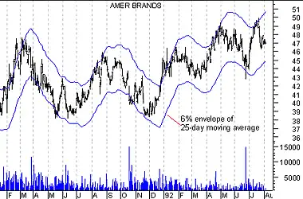

An envelope is comprised of two moving averages. One moving average is shifted upward and the second moving average is shifted downward.
Envelopes define the upper and lower boundaries of a security's normal trading range. A sell signal is generated when the security reaches the upper band whereas a buy signal is generated at the lower band. The optimum percentage shift depends on the volatility of the security--the more volatile, the larger the percentage.
The logic behind envelopes is that overzealous buyers and sellers push the price to the extremes (i.e., the upper and lower bands), at which point the prices often stabilize by moving to more realistic levels. This is similar to the interpretation of Bollinger Bands.
The following chart displays American Brands with a 6% envelope of a 25-day exponential moving average.
 You can see how American Brands' price tended to bounce off the bands rather than penetrate them.Envelopes are calculated by shifted moving averages. In the above example, one 25-day exponential moving average was shifted up 6% and another 25-day moving average was shifted down 6%.